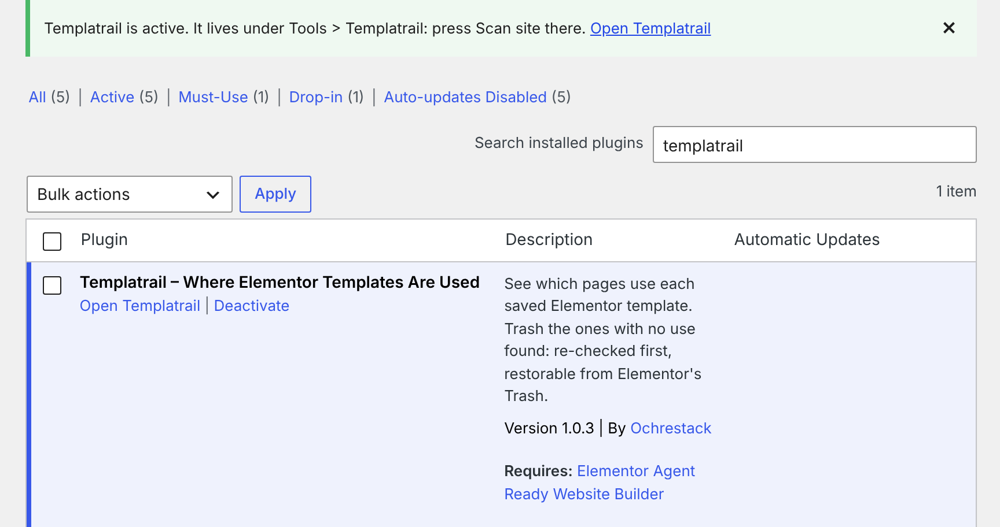
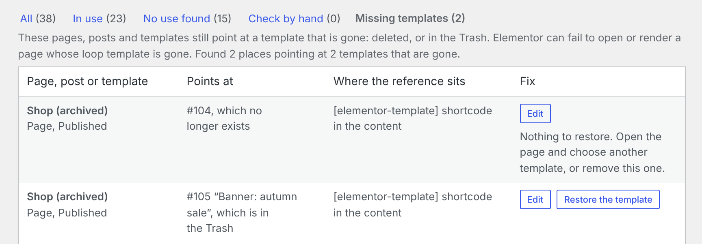
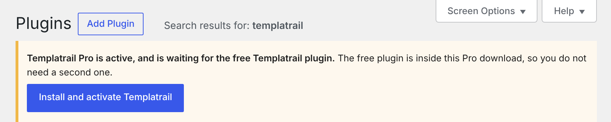

Templatrail quick start
Install, scan, clear out, and what Pro adds. Back to the product page.
Install
Requires WordPress 6.8 or later, PHP 7.4 or later, and Elementor active.
- Get the files. The free plugin is templatrail.zip (version 1.0.7) from this site; it is not on WordPress.org yet. Pro buyers also get
templatrail-pro.zip(version 1.0.7) from Polar, through the link in the order email. Do not unzip either. - In WordPress, go to Plugins > Add Plugin, click Upload Plugin, choose
templatrail.zip, then Install Now and Activate Plugin. The Plugins screen then says where it lives, with an Open Templatrail link.

Scan the site
Go to Tools > Templatrail and press Scan site. A progress bar shows it working through your posts in batches. When it ends, the page shows a Last scan line with the date, and the report; Scan again starts over.
Read the report
Each row is a saved template or Component with its type, status and number of places. Click the places (for example 5 places) to see each page, post or template that uses it, how, and an Edit link (Edit with Elementor where the reference is in Elementor’s data). A template’s name opens its own screen, and the search box beside the tabs finds a template by name. The tabs are All, In use, No use found (no use was found in the places Templatrail reads), Check by hand (Templatrail could not tell, and shows why) and Missing templates. Elementor’s Templates > Saved Templates list has a Used on column too: a count opens that template’s screen, where Pro adds Replace everywhere.
Clear out templates
- Open the No use found tab and tick the templates to clear out. Read the line above the button first: templates placed from PHP theme files, menus or other plugins’ own tables show as No use found, because Templatrail cannot see them.
- Press Move selected to Trash. Templatrail reads the site again, leaves out any template that gained a use, and moves the rest to WordPress’s Trash; the result names both.
- To restore, use Open Elementor’s Trash view to restore templates in the result, point at a template and choose Restore. WordPress empties its Trash after 30 days by default; if your site has the Trash switched off, Move selected to Trash is greyed out and says why.
Missing templates
The Missing templates tab lists pages, posts and templates that still point, by ID, at a template that was deleted or is in the Trash. A button opens the page for editing; for a template in the Trash, Restore the template brings it back.

Templatrail Pro
Install Pro. Do the same with templatrail-pro.zip, which carries the free plugin inside. While Templatrail is not active, a notice on the Plugins screen (and on Tools > Templatrail) has one button, Install and activate Templatrail (Activate Templatrail when it is installed already).

- Replace everywhere. Open the template’s own screen, press Replace everywhere, choose a template of the same kind under Replace with, press Preview the change, read This will change, then press Replace everywhere again. Each changed post gets a revision first.
- Export CSV. Beside the Scan button on Tools > Templatrail: the report of the last scan, one row per place that uses a template.
Updating Pro. Pro makes no network call, so WordPress shows no update. Sign in to Polar’s customer portal with the email you bought with, download the new templatrail-pro.zip, then go to Plugins > Add Plugin > Upload Plugin, choose it, press Install Now and then Replace current with uploaded. Pro stays active.
Limits, removal, privacy
What Templatrail does not read is listed on the product page. Pro replaces shortcodes and widget settings only; the other uses are listed, not replaced. Tested on Linux with WordPress 7.1.5 and 6.8.3, PHP 8.3 and 7.4 and Elementor 4.4.1 (how we tested); Elementor Pro itself, a Windows or macOS web server, and browsers other than Chrome were not part of the tests.
Deactivate on the Plugins screen stops Templatrail and keeps its scan results; deleting it removes its two tables and its settings, and touches no template or page.
Neither plugin contacts any server: no telemetry, no analytics, no license check, no update check of its own. Scan results are stored in your site’s own database.
Support
Email support@ochrestack.com with your WordPress, PHP and Elementor versions and what the screen showed.